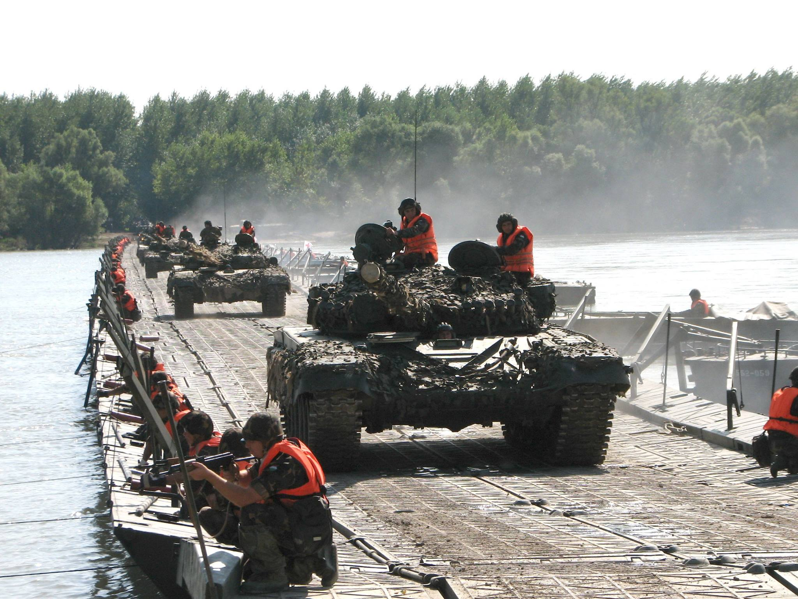
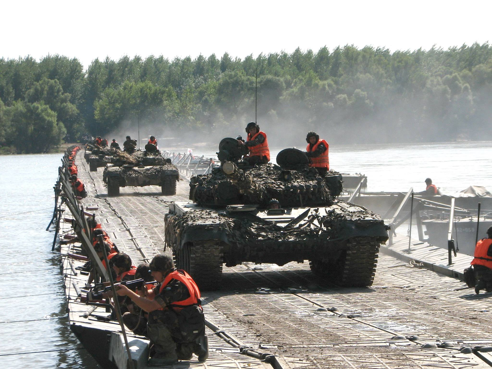

Magyar Honvédség II. Rákóczi Ferenc 14. Műszaki Ezred
FŐ FELADATOK, KÉPESSÉGEK
Lövész zászlóaljak, zászlóalj harccsoportok harcának közvetlen műszaki támogatása;
Híd-és deszantátkelőhelyek berendezése, fenntartása;
Útépítési feladatok végrehajtása;
Erődítési, álcázási feladatok;
Vezetési pontok berendezése;
Meglévő infrastruktúrák (áram, víz, energia, közművek) helyreállítása és karbantartása;
Víztisztítás;
Anyagelőkészítés (fakitermelés, feldolgozás);
Műszaki felderítés;
Részvétel a Honvédelmi Katasztrófavédelmi Rendszer feladataiban;
Részvétel Befogadó Nemzeti Támogatás feladataiban.
TÖRTÉNET
A jelenlegi Damjanich-laktanya területét Szentes városa 1931-ben adományozta a honvédségnek, amelyet 1935-ben a Pápáról áthelyezett Simonyi Óbester Huszárezred egy huszárosztálya vett birtokba. A második világháború után különböző fegyvernemi alakulatok és szakcsapatok, de főleg műszaki katonák állomásoztak a laktanyában.
A helyőrségben 1991-től csak műszaki szakcsapatok teljesítenek szolgálatot.
1991. augusztus: 87. Műszaki Technikai Ezred;
1997. március 01-én a szegedi, szentesi és ercsi műszaki alakulatok jogutódjaként létrejött az MH 37. II. Rákóczi Ferenc Műszaki Dandár;
2007. március 1-én a dandár szervezetének felszámolása után megalakult az MH 37. II. Rákóczi Ferenc Műszaki Zászlóalj;
2010. június 15-én az alakulat a szervezeti változást követően MH 37. II. Rákóczi Ferenc Műszaki Ezred néven tevékenykedett;
2023. január 01-től az alakulat kibővült feladatrendszerrel az MH II. Rákóczi Ferenc 14. Műszaki Ezred néven kezdte meg feladatai ellátását.
CSAPATÜNNEP
Július 14. Az ünnep aktualitását a II. Rákóczi Ferenc fejedelem által vezetett szabadságharc első győztes csatája adta, amely 1703. július 14-én a Tiszabecs település határában zajlott a kurucok és a császári csapatok között. A jeles történelmi esemény eredményeképp II. Rákóczi Ferenc fejedelem seregének sikerült a Tisza bal partjára átkelnie, így mozgalma ezzel a csatával vált az egész országra kiterjedő szabadságharccá.
ELÉRHETŐSÉGEK
Cím: 6600 Szentes, Csongrádi út 108.
Postacím: 6600 Szentes, Pf.: 62.
Telefon: (+36)-63/510-700
Fax: (+36)-63/510-710
HM-tel.: 02-42/41-21
HM-fax: 02-42/41-00
Email: mh.14mue@mil.hu

 
